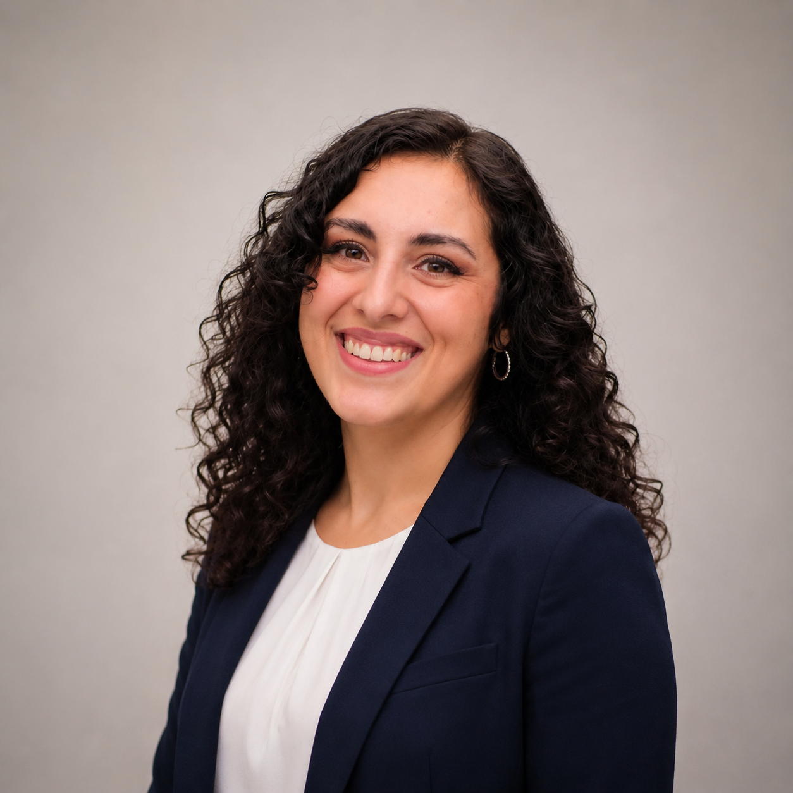

ITALERT
Evaluating machine translation for emergency communication.
Read paper →Language · Technology · Human impact
PhD Researcher · University of Macerata
Helping critical information travel across languages.
I study how machine translation and large language models can support clear, reliable and actionable communication in crises.
Evaluating machine translation for emergency communication.
Read paper →Assessing actionability in crisis translation.
Ask about the project →Multilingual terminology for disaster risk reduction.
Read paper →about

Hi, I'm Maria Carmen, originally from Naples in Southern Italy. Over the course of my academic and professional journey, I have studied and worked in several countries, including Switzerland, Germany, Spain, and Ireland. I am passionate about foreign languages and artificial intelligence, particularly its impact on society.
news
research
Full profile on Google Scholar ->
community
Community engagement
Trying to create a positive impact in the world
Outside academia, I am passionate about the social dimensions of language and technology. My research is driven by the belief that machine translation and language technologies should be accessible, reliable, and designed with real users in mind.
I am committed to bridging the gap between cutting-edge research and real-world needs, and to making language technology work for those who need it most.
If you'd like to collaborate, discuss ideas, or exchange experiences - feel free to reach out!